欢迎关注孖仔帮～
★ 前言 ★
我是圆圈妈，孖仔帮sgguy.com接下来要给双胞胎准妈妈分享圆圈妈的双胎剖宫产记实录，因篇幅较长，将分为上中下三部分，分别是：
（上）你看不看？双胞胎妈妈直播剖腹产全过程
（中）你看不看？双胞胎妈妈直播剖腹产全过程
（下）你看不看？双胞胎妈妈直播剖腹产全过程
备注：图片来源于网络，考虑到孕妈咪的产前心情，图片大多都采用搞笑漫画形式，让剖腹产没那么恐怖。
01
继上一篇《（上）你看不看？双胞胎妈妈直播剖腹产全过程》提到，在我的强烈要求和催促下，我终于被恩准剖腹产，进入手术室。
住院保胎18天，收获最多的是，每天都能听到很多小道消息：谁昨晚顺产个女宝宝，谁中午剖了对龙凤胎，谁剖腹产大出血被送进ICU还没出来…
印象最深刻的是，跟我同病房的33床，她也是一个单绒双羊的双胎妈妈，因为其中一个胎儿脐血流偏高入院保胎。
她熬到36周，就被医生拉去剖了，生了一对男宝宝，据说体重还不错，一个4.8斤一个5.4斤。
我还去给她道喜，结果，当天晚上就听说她抽过去了，进了抢救室。
听护士说，为了早点给孩子喂母乳，拒绝用止痛泵导致睡眠不足，引发产后并发症。
这事件让我惴惴不安了三天三夜，仿佛所有剖腹产的双胎妈妈都会抽风进ICU似的。
我愈加诚惶诚恐了！以至于我跟圆圈爸分开后，第一时间就嚷嚷着找麻醉师。
我要麻醉师在我面前发毒誓，一定要给我用世界上最好的止痛药！
02
手术室很宽敞很冷，我终于知道他们为什么大热天给我盖上棉被了。
陆陆续续进来很多穿着绿色手术服带着口罩帽子的助产士，有男有女，约莫10来个人。
他们看起来好年轻，有说有笑地准备着手术用的器械，没怎么搭理我。
我有点心寒了，我可是双胎孕妇啊，已经见红破水开三指了，火烧眉毛的级别了，再不剖，我真的要被迫顺产了。
为何生娃那么神圣严肃的事情，他们居然还有闲工夫唠家常！居然还听到他们说手术完了去东门吃宵夜！
我们娘三的小命啊，交到他们手里真的安全吗？我好后悔没有早点把银行卡密码告诉圆圈爸了！
他是好人，还年轻，长得像王力宏，再找个媳妇应该手到擒来。
过了一会儿，麻醉师来了，听到助产士喊他“强哥”。他走到我边上跟我打招呼：“你就是那个吵着要剖腹的双胎妈妈啊？”
我看见麻醉师跟见到救命稻草一样：“那个强哥啊，拜托了，请给我用止痛泵，一定要给我用止痛泵！我很怕疼！我很怕死！”
麻醉师被我逗乐了，安慰我：“那玩意有副作用，能不用就不用吧！别紧张！没事的！”
四五个男助产士一起把175斤重的我从移动推车上挪到了手术台（整个孕期增重23KG），接着有助产士过来给我腰部以下全部涂了消毒液，凉飕飕的，有点痒但是挺舒服的。
03
这时，又进来一个人嚷嚷着，听声音像是主刀医生：“都是头位，怎么不自觉生啊？现在的小年轻真吃不了苦，快检查下宫口开多大了。”
刚才还说说笑笑的助产士马上严肃起来，分成好几拨，各自待命了。
有个女助产士在我的会阴部位探了下：“才两指而已！”
“行，剖！”主刀医生一声令下。
那个强哥麻醉师过来给我打麻醉，问了我身高体重，然后把我掰到侧位，让我侧卧弓背抱膝，并嘱咐我不准动！
可怜我的双胎肚子，实在太大了，压根摸不到膝盖啊!最后在助产士的协助下，才保持住弓背抱膝的姿势。
感觉他在我的脊柱下方的某个部位，用笔画了几下（估计在标位置），然后用针扎了进去。
疼！但尚可以忍受，过了一会，一股暖流一下子从腰到下肢扩散开来，慢慢地助产士协助我由侧卧放平身体。
全程，我真的很听话，一动都不动，大气都不敢出，麻醉师也全程温柔对待。
虽然他只露出眼睛，听声音感觉是个帅小伙，莫不是我已经要被剖腹产了，我一定倒追这个强哥！（圆圈妈果然是腐女一枚！）
很快，麻醉起作用了，有护士拿出一个尖锐的塑料片在我腿上划了下，让我说出感觉，我只觉得下肢以下麻麻的，没有知觉了。
但是我感觉好冷，牙齿一直在打架，哆嗦个不停，不知道是我自己心里作用还是太紧张。
我哆哆嗦嗦地问：“-我怎么在发抖啊，是正常的吗？”
“没事，要是觉得呼吸困难就要跟我说！”一助产士回答我。
接着，有助产士给我插尿管了！由于已经麻醉，我感觉不到疼痛，谢天谢地插尿管的痛我没有机会领教了。
护士在我的右手上扎了一个留置针头供输液，我的右手指夹了血氧夹，左手胳膊缠了血压绑带，脸上带了氧气面罩。
带上氧气面罩之后，我突然感觉呼吸困难，更冷了，想吐，我赶紧告诉医生我不舒服，医生说没有问题，并让我不要取开氧气罩。
过了一会儿，护士在我的腹部上用消毒液擦拭之后，用无菌布盖住，又用另一块无菌布覆盖了我的下巴以下部分，我的视线被完全挡住了。
几盏手术大灯齐刷刷地对着我的肚子，刚好有一个灯罩类似反光镜，居然给我看到我的下腹部靠近耻骨处漏出一部分，没有被布遮住。心想，那就是刀口的地方吧！
04
手术开始了！18点零5分下刀。
随着助产士按了下倒计时，我从反光镜上看到，我的下腹部被割开一个口子，不疼！感觉好像被人拿着画笔在肚子上轻轻划线似的。
我居然一点都不害怕，这可是现场直播啊！被我赶上了！
手术的过程跟我在网上看的剖宫产视频差不多。
主刀医生先是在我下腹部比划了下，然后就横向划开了一个口子，刀口约12厘米左右，接着就看到血了，这时候还不是很多血，一点点，
接着一层层的皮肤组织被一刀刀隔开了，估计是子宫壁被切开了，突然看到好多血瞬间往外涌，旁边的助产士不断地递纱布和器械给主刀医生。
我没有痛觉，但是可以感觉到他们在我肚子上搅来搅去的，此时我感觉很想吐！ 并不是因为看到那么血腥的画面，而是感觉肠子被他们扯出来了，反胃难受。
这时，有一个助产士在我的子宫上段，使劲按压，让我更加想吐了了，我难受地闭上了眼睛。
就在我睁开眼睛的时候，看到反光镜上有一团东西从肚子里面冒出来了！
我首先看到的是头发！呦呵，我的第一个宝宝出来了！
“18点11分！”听到有助产士在记录着。
医生很麻利地剪掉脐带。我看到红扑扑的一团东西，蜷缩着，好像有呜咽声！是第一个宝宝的声音，
很快他就被抱走了，我想转头看他被抱哪里去，无奈脸上的氧气面罩推不开，动弹不得，不一会听到呜咽声越来越大了，可是不响亮！
我迫不及待地问一直站在我边上的助产士：“是男宝宝还是女宝宝啊！”那是一个男助产士，应该是协助麻醉师，盯着仪器随时观察着我的生命体征，我感动极了。
“是男宝宝！”
“另外一个呢？”
“还没出来。”
还没等第二个宝宝出来，已经有护士把第一个宝宝清理完毕抱过来给我看了，让我指认是男宝宝还是女宝宝。
05
这是我第一次近距离看见与我相识9个月，但是素未谋面的小人儿，第一眼就瞄到他的小丁丁。
很好，果然是男宝宝，我的预感非常准确！
就在我百感交集的时候，又听到一阵呜咽声，第二个宝宝也出来了，18点12分。
整个安静的病房一下子热闹起来了，都是他们的哭声，略带嘶哑，虽然不响亮但很有活力。
不一会，护士又抱了第二个宝宝给我指认，问是男宝宝还是女宝宝。
我勉强挤出一丝笑容：“他们是我儿子吗，怎么那么丑啊！”
护士们都被我逗乐了，纷纷过来给我道喜：“恭喜啊，是两个小王子哦！”
因为圆圈是早产儿，我只是匆匆地瞥了他们一眼，很快就被护士移交给手术室外等候的新生儿科医生。
他们就这样被抱走了，传说中的母婴0距离接触呢？不是会有一个环节，护士把两个宝宝放在我怀里，然后我就一脸幸福的样子，怎么就被忽略了呢？
两个宝宝抱出来之后，看到医生在忙着给我清洗腹腔，按压子宫，此时好像感觉麻醉不起作用了，有拉扯的痛。
应该差不多完了吧，我长吁一口气，盼着早点结束，感觉很累很累，好想睡一觉。
这时，一直沉默的主刀医生说话了：“你的右侧输卵管发现一个系膜囊肿，给你切掉了。”
此时我已经有点虚脱，已经听不清医生在说什么了，等助产士给我看的时候，才知道从我身上割下来的那个一串串像葡萄的东西，就是系膜囊肿。
缝合肚子的时候，突然听到主刀医生一声大喊：“出血过多，再打一针！快！”
然后就瞥见一助产士快速地在我屁股上扎了一针！
过了一会儿，护士把无菌布撤掉，重新给我盖上被子。然后我就被推出去了！
06
我抬头问了下推我出手术室的那位大叔：“手术结束了吗？我们要去哪里啊？”
“回病房啊！”大叔真好人，还安慰我不要害怕，手术很顺利，放宽心休息！
好快啊，剖腹产就这样结束了，从开始动刀到出手术台持续了45分钟。
手术室外已经有爱婴区的主治医生在等候接应我了，接着我就看到了婆婆和小姑子在外面等候着！
这个时候居然没有看到圆圈爸，心里拔凉拔凉的。
后来才知道，由于圆圈早产，必须要亲爹签名才可以收治入新生儿科观察。圆圈爸是去新生儿科给圆圈办理入院手续。
尽管如此，还是很遗憾，老娘去鬼门关走了一遭，还顺便带了两个大胖小子回来了，居然不在门外候着，圆圈妈的心里疙瘩极了！
出来的时候快七点钟了，又经过那个遮雨棚，太阳已经下山了！
谢天谢地，我活着出来了！
颠簸的过道把我搅来搅去的，让我更想吐了！
此时，好像麻醉慢慢失效了，我已经开始感觉到痛了，伤口好像在撕裂似的，我有点晕晕的感觉，很困，可是睡不着！
我被迅速送到了爱婴区，在分诊台等护士安排床位。
护士一边给我办入院手续，一边给我量血压，居然升到178了，又测了下180….
我慌了，该不会要进ICU抢救吧！
这时有护士赶紧在我嘴里塞了个药片，我本能抗拒着，好说歹说是治血压高的，我才把药片吞进去了！
刚下手术台，浑身上下说不出的感觉，除了伤口疼，还很头晕，很沉，眼睛看东西迷糊了，难受极了！
“好疼啊！”我哽咽着，忍不住喊出声。
医院走廊里不停有人经过，都围在一边看着我喊疼！护士们叽叽喳喳了一会终于给我安排到床位，把我安顿下来了！
挪到床位的时候，四五个男人才把我抬起来放下！
陆陆续续有护士进出病房在我的伤口上压沙袋，在我的手上扎管子，打点滴！接下来就是六个小时期限的禁食禁水，去枕平躺！
本文出自孖仔帮，专注双胞胎育儿经验分享，著作权归孖仔帮所有。
未
完
待
续
温馨提示：
上期推文：
（上）你看不看？双胞胎妈妈直播剖腹产全过程
下期预告：
（下）你看不看？双胞胎妈妈直播剖腹产全过程
本文出自孖仔帮，专注双胞胎育儿经验分享，著作权归孖仔帮所有。
各位双胎妈妈，更多孖仔帮原创育儿文章请猛戳 "阅读原文" ，或者直接上圆圈妈的个人博客，大把双胎孕期育儿心得经验分享。

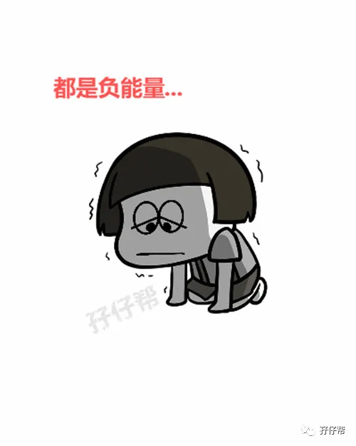
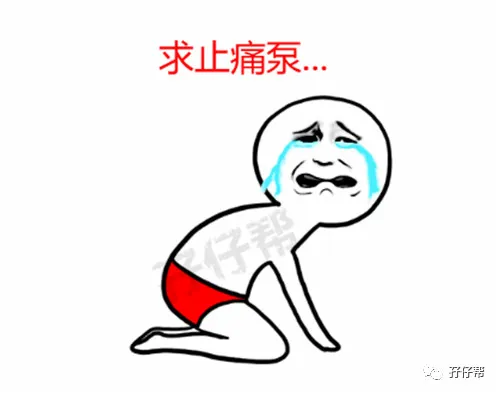
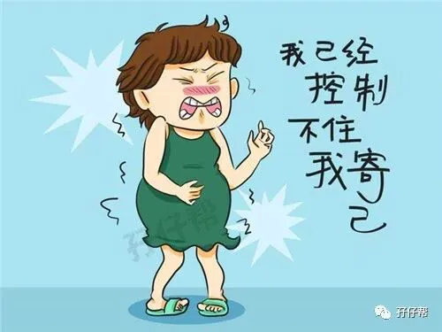
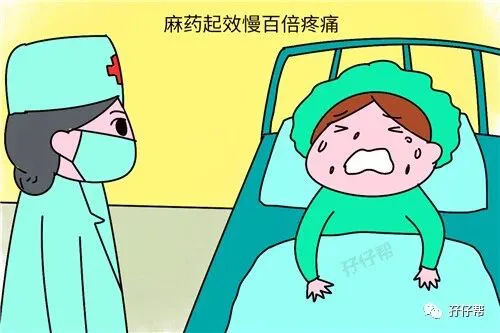
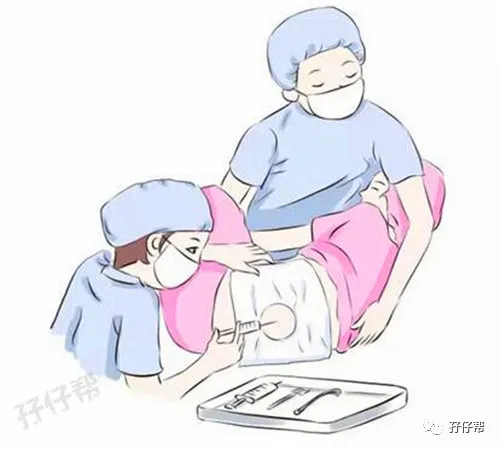
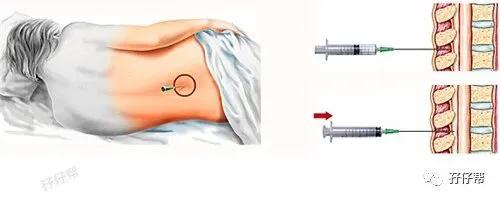
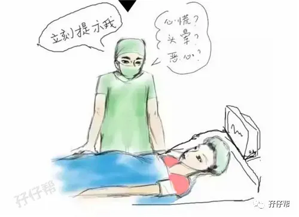
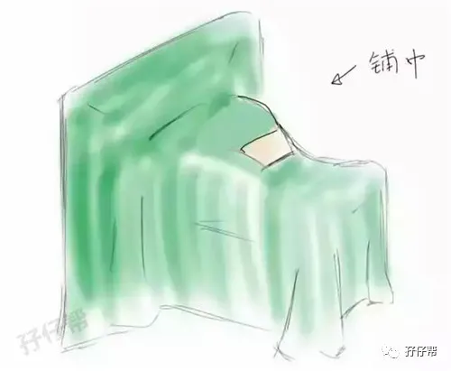
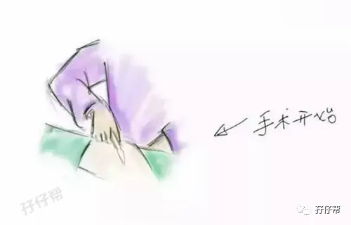
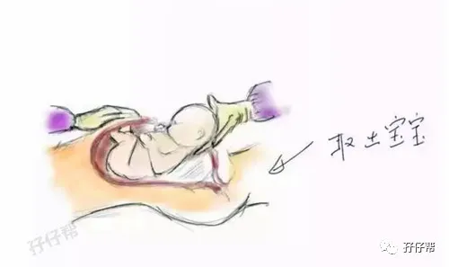
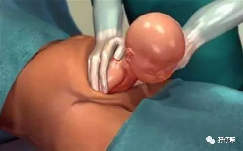
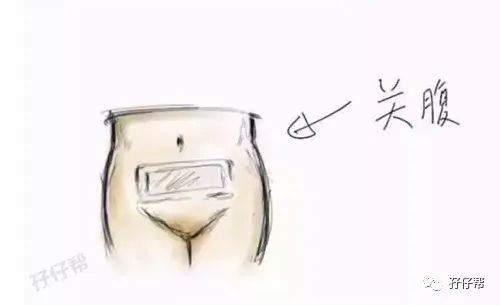
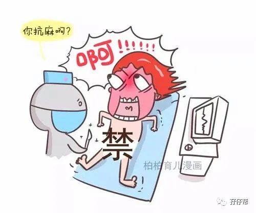